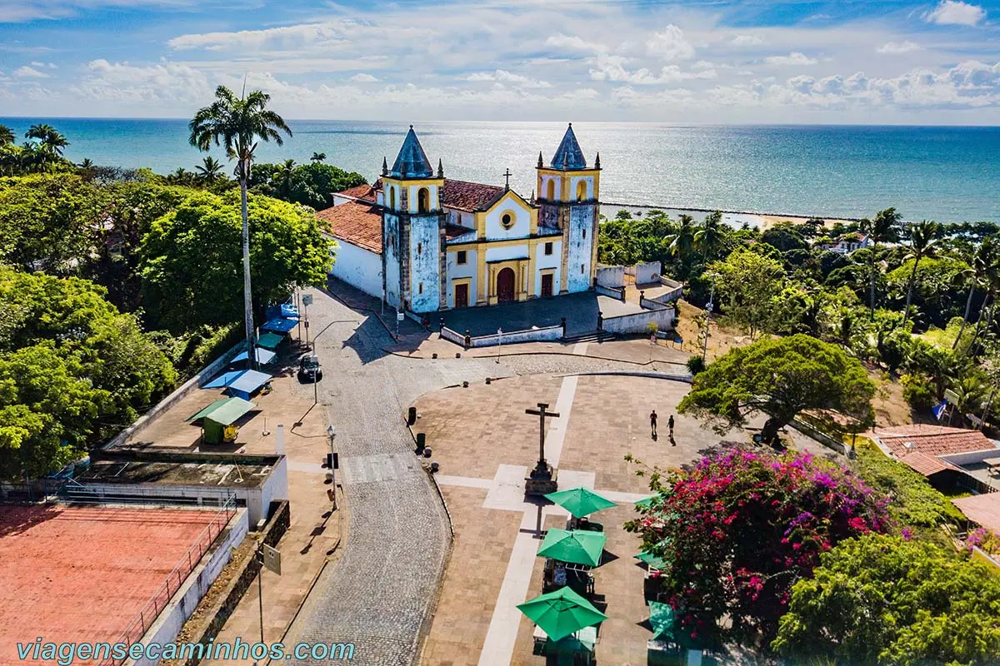

Recife Antigo
Praça do Marco Zero
Ponto de partida das estradas pernambucanas, cercado por edifícios históricos revitalizados, centros culturais e travessia de barco para o Parque das Esculturas de Francisco Brennand.
Explore pontes centenárias, ladeiras coloniais repletas de arte e piscinas naturais de águas cristalinas em um roteiro inesquecível entre Recife, Olinda e o litoral sul.

Cada destino reúne identidade própria, gastronomia regional e cenários marcantes para diferentes estilos de viagem.
Ponto de partida das estradas pernambucanas, cercado por edifícios históricos revitalizados, centros culturais e travessia de barco para o Parque das Esculturas de Francisco Brennand.

Patrimônio Cultural da Humanidade pela UNESCO, famoso pelos ateliês de artistas locais, igrejas barrocas, tapiocas artesanais e um dos pores do sol mais emblemáticos do litoral.

Formações de recifes de corais que revelam aquários naturais na maré baixa, ideais para passeios de jangada, mergulho livre e caminhadas por extensas faixas de areia branca.
Além das paisagens naturais, o turismo na região se destaca pela força de suas expressões populares: do frevo e do maracatu às receitas tradicionais como o bolo de rolo, a cartola e os frutos do mar preparados na brasa.
Com temperaturas médias entre 25 °C e 31 °C, priorize roupas leves, calçados confortáveis para caminhar em calçamentos de pedra e proteção solar constante.
Recife e Olinda são cidades vizinhas e podem ser percorridas em trajetos curtos. Para o litoral sul, considere traslados agendados ou aluguel de carro.
Respeite as áreas demarcadas nos recifes de corais, evite pisar nas formações marinhas e valorize o trabalho de guias e artesãos locais.